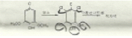

임산가공기사 (2012-09-15 기출문제)
1과목: 목재이학
1. 세포벽의 미세구조 중 탄성계수와 관련된 설명 중 맞는 것은?
- 마이크로피브릴(micro fibril) 경사각이 클수록 탄성계수는 크다
- 셀룰로오스 결정화도가 클수록 탄성계수는 작다.
- 섬유장이 길수록 탄성계수는 작다.
- 세포벽의 두께가 클수록 탄성계수는 크다.
(정답률: 72%)

2. 활엽수재의 환공재에 있어서는 연륜폭이 넓어지면 비중은 일반적으로 어떻게 되는가?
- 약간 감소된다.
- 많이 감소된다.
- 증가된다.
- 거의 변화가 없다.
(정답률: 79%)
3. 목재에 반복하여 하중을 가하면 기계적 성질이 저하하여 비교적 작은 하중에도 마지막에는 파괴되는데 이 때의 응력은?
- 탄성한도
- 비례한도
- 피로한도
- 항복점
(정답률: 79%)
4. 시험재의 전건무게가 1000g이고 건조 중에 시험재의 무게가 1300g일 때 건조 중 함수율은 얼마인가?
- 20%
- 25%
- 30%
- 35%
(정답률: 87%)
5. 전건비중과 진비중으로부터 목재의 공극률을 구하는 식으로 맞는 것은?
- 1-(진비중/전건비중)
- 1+(전건비중/진비중)
- 1-(전건비중/진비중)
- 1+(전건비중/진비중)
(정답률: 77%)
6. 목재 틀어짐(warping)의 종류가 아닌 것은?
- bowing
- cupping
- hatting
- twisting
(정답률: 80%)
7. 응력이 탄성한도를 지난 후 응력을 제거하여도 원래의 형태로 돌아가지 않는 성질을 무엇이라고 하는가?
- 탄성
- 소성
- 응력
- 변형
(정답률: 90%)
8. 단면적이 4cm2인 목재에 50kg의 하중이 가해진다면 응력은 얼마인가?
- 125 x 103kg/cm2
- 12.5 x 102kg/cm2
- 12.5kg/cm2
- 1.25kg/cm2
(정답률: 81%)
9. 1변의 길이 a = 20mm 인 정사각형에서 높이 h =100mm 인 목재의 중량이 16g이다. 이 목재의 비중은?
- 0.2
- 0.3
- 0.4
- 0.5
(정답률: 85%)
10. 다음 목재의 직류비저항(direct-current resistivity)에 영향하는 인자에 대한 설명 중 맞는 말은?(오류 신고가 접수된 문제입니다. 반드시 정답과 해설을 확인하시기 바랍니다.)
- 목재밀도의 영향은 함수율 영향에 비해 크다.
- 저항성은 함수율이 증가함에 따라 증가한다.
- 전기저항은 온도가 상승하면 증가한다.
- 방사방향 전기저항은 섬유방향 전기저항보다 적다.
(정답률: 54%)
11. 목재의 비중이 증가하면 나타나는 목재의 성질로 옳은 것은?
- 수축률이 감소한다.
- 목재강도가 감소한다.
- 절삭 소용동력이 증가한다.
- 도료 부착성이 증가한다.
(정답률: 85%)
12. 목재의 물리적 및 기계적 성질에 거의 영향을 미치지 않고 다만 목재의 중량에만 영향을 미치는 목재내의 수분은?
- 목재구성수
- 표면흡착수
- 자유수
- 모관응축수
(정답률: 91%)
13. 건조응력을 측정하는 방법이 아닌 것은 어느 것인가?
- 프롱법
- 스라이스법
- 톰슨법
- 분할법
(정답률: 80%)
14. 악기용 목재의 특성에 대한 설명으로 맞는 것은?
- 방사감쇠보다 손실감쇠가 커야 한다.
- 비중에 비해 탄성율이 커야 한다.
- 연륜폭이 2~3cm 정도로 넓고 비중이 커야 한다.
- 함수율은 섬유포화점 부근이 좋다.
(정답률: 76%)
15. 다음 중 목재의 수축과 팽윤의 영향인자가 아닌 것은?
- 수분의 증감
- 목재의 비중
- 목재구성성분
- 목재의 색
(정답률: 92%)
16. 목재의 섬유에 평행한 방향의 열전도율은 섬유에 직각 방향보다 어느 정도 큰가?
- 약 1~2 배
- 약 2~3 배
- 약 3~4 배
- 약 4~5 배
(정답률: 68%)
17. 목재의 흡수량 측정시 침적에 사용하는 물의 온도는?
- 15±1℃
- 25±1℃
- 60±1℃
- 65±1℃
(정답률: 93%)
18. 형광성이 뚜렷하여 이른바 형광목재(fluorescent wood)로 불리는 과(科)는?
- 옥련과(科)
- 벼과(科)
- 콩과(科)
- 소나무과(科)
(정답률: 87%)
19. 목재의 전기 저항에 대한 설명 중 맞는 것은?
- 함수율이 증가할수록 저항율은 증가한다.
- 온도가 상승하면 감소한다.
- 수종에 따라 전기 저항율의 변동이 심하다.
- 섬유주향에 따라 영향을 받지 않는다.
(정답률: 72%)
20. 목재의 점탄성 모형에 대한 설명으로 틀린 것은?
- Burger모형은 지연탄성 및 점섬거동을 나타낼 수 있다.
- kelvin모형은 지연탄성거동을 나타낼 수 있다.
- Maxwell모형은 순간탄성거동을 나타낼 수 있다.
- Burger모형에서 Maxwell모형을 빼면 점성거동을 나타낼 수 있다.
(정답률: 62%)
2과목: 목재해부학
21. 횡단면상에서 춘재부의 고립관공(孤立罐孔)의 반경방향 지름이 가장 큰 수종은?
- 개오동나무, 팽나무
- 은수원사시, 보리수나무
- 밤나무, 참나무
- 너도밤나무, 동백나무
(정답률: 66%)
22. 옹이를 올바르게 설명하지 못한 것은?
- 산옹이는 가지의 생장이 왕성할 때 생긴다.
- 죽은옹이는 가지의 형성층 활동이 멈추었을 때 생긴다.
- 산옹이는 수목의 수심으로부터 출발한다.
- 산옹이는 가지가 잘린 다음부터 생기지 않는다.
(정답률: 61%)
23. 목부를 구성하는 세포 및 조직과 기능의 연결이 옳은 것은?
- 유세포 - 지지 및 통도기능
- 가도관 - 양분저장
- 목섬유 - 지지기능
- 방사조직 - 축방향 수분통도
(정답률: 87%)
24. 미국에서 참나무를 수입하였는데 백참나무류 (white oak)인지 아니면 적참나무류(red oak)인지 궁금하여 전문기관에 수종 식별을 의뢰하였다. 식별 결과 백참나무라고 밝혀졌는데 그 근거로 적합 하지 않은 것은?
- 춘재 관공으로부터 추재관공으로의 이행이 대개 급격하였다.
- 심재의 도관요소 내에 타일로시스(tylosis)가 거의 발달되어 있지 않았다.
- 크기가 큰 방사조직의 평균 높이가 1.3~3.2cm로써 높이가 3.8cm보다 큰 방사조직도 자주 관찰 되었다.
- 추재 관공의 세포벽이 얇으며 횡단면상의 모양은 다소각진 형상을 나타내고 있었다.
(정답률: 70%)
25. 방사조직을 폭에 의해 분류한 것으로서 폭이 1세 포폭의 방사조직을 말하며 버드나무류, 포플러류, 밤나무 등에서 관찰되는 방사조직은?
- 단열방사조직
- 장열방사조직
- 소열방사조직
- 다열방사조직
(정답률: 87%)
26. 수목은 생육조건에 따라 줄기가 원뿔형으로 되거나, 아니면 아래위가 거의 같은 원통형으로 자란다. 이용에 적합한 원통형의 줄기를 얻는데 적당한 생육조건은?
- 듬성듬성 심어 햇빛이 충분히 들어오게 한다.
- 촘촘히 심어 서로 경쟁이 심하게 한다.
- 큰 나무와 작은 나무를 섞어 심어 작은 나무가 햇빛을 잘 받게 한다.
- 비옥한 곳에 심는다.
(정답률: 61%)
27. 다음 중 압축이상재(압축응력재, compression wood)의 특징이 아닌 것은?
- 가동관의 횡단면은 원형이고 세포간극이 많다.
- 가도관의 길이는 정상재보다 다소 길다.
- 마이크로화이브릴 경사각은 정상재보다 크다.
- 정상재에 비해 리그닌의 함량이 높다.
(정답률: 61%)
28. 활엽수재의 방사조직을 구성하는 세포가운데 가장 흔하게 볼 수 있는 것은?
- 방형세포
- 직립세포
- 타일세포
- 평복세포
(정답률: 63%)
29. 다음 중 방사유세포가 대부분 원형으로 관찰되는 단면은?
- 횡단면
- 방사단면
- 접선단면
- 목구면
(정답률: 62%)
30. 추재율(만재율)이 커지면 나무의 비중은 어떻게 되는가?
- 커진다.
- 작아진다.
- 추재율과 관련이 없다.
- 수종에 따라 다르다.
(정답률: 67%)
31. 다음 침엽수재의 해부학적 특성에 관한 설명 중 틀린 것은?
- 활엽수재에 비해 구성세포의 종류 및 형태가 단순하다.
- 가도관은 수분통고와 수체지지 역할을 한다.
- 가도관, 유세포로 이루어지나 수종에 따라 도관을 가진다.
- 방사방향으로 방사가도관을 가지는 수종이 있다.
(정답률: 65%)
32. 다음 세포의 종류 중 어느 세포가 많으면 강도가 떨어지는가?
- 유세포(柔細胞)
- 가도관(假導管)
- 목섬유(木纖維)
- 사부섬유(篩部纖維)
(정답률: 77%)
33. 다음 가도관의 종류 중 활엽수에 분포하는 가도관은?
- 방사가도관
- 수지가도관
- 스트렌트가도관
- 섬유상가도관
(정답률: 66%)
34. 압축응력재의 일반적인 특징으로 틀린 것은?
- 육안적으로는 짙은 갈색을 띄고 조재와 만재의 구별이 명료하지 않다.
- 가도관의 횡단면은 둥근 형태를 나타내고 세포간 극이 많다.
- 방사방향, 접선방향의 수축율에 비해 축방향 수축율이 매우 크다.
- 정상재에 비해서 비중, 경도, 종압축강도는 작지만 인장강도는 현저히 크다.
(정답률: 73%)
35. 벽공실 내면의 전부 또는 일부가 2차벽에서 생성된 융기물로 덮여 있는 벽공은?
- 베스쳐드 벽공(Vestured pit)
- 분기벽공(ramiform pit)
- 맹벽공(blind pit)
- 반연벽공(half borded pit)
(정답률: 80%)
36. 다음 세포나 조직 중 한정된 수종에서만 나타나는 조직은?
- 방사유세포
- 가도관
- 목섬유
- 초상세포
(정답률: 80%)
37. 가도관 벽이 갖는 특징이 아닌 것은?
- 유연벽공을 갖는다.
- 타일로소이드를 갖는다.
- 나선비후를 갖는다.
- 크라슐래를 갖는다.
(정답률: 55%)
38. 분야벽공 중 벽공연은 원형 혹은 타원형으로 공구는 벽공연의 외측으로 밀려나온 폭이 좁은 윤출공구(extended pit aperture)를 가진 벽공은?
- 창상벽공
- 소나무형벽공
- 편백형벽공
- 가문비나무형벽공
(정답률: 62%)
39. 목재를 생산하는 식물 중에서 그 숫자가 가장 많은 식물은?
- 양치식물
- 나자식물
- 쌍자엽식물
- 단자엽식물
(정답률: 70%)
40. 다음 중 침엽수재 가도관과 방사조직 각각의 구성비율로 가장 적합한 것은?
- 95%, 5%
- 85%, 15%
- 75%, 25%
- 50%, 50%
(정답률: 91%)
3과목: 목재화학
41. 탄닌(Tannin) 이란?
- 수용성 Polypropane 의 총칭이다.
- 수용성 Polyphenol 의 총칭이다.
- 수용성 Alkaloid 의 총칭이다.
- 수용성 Phenyl propane 의 총칭이다.
(정답률: 73%)
42. C6-C3-C6 의 골격을 갖고 있는 황색의 색소 화합물을 무엇이라 하는가?(오류 신고가 접수된 문제입니다. 반드시 정답과 해설을 확인하시기 바랍니다.)
- 퀴논
- 리그닌
- 터어페노이드
- 플라보노이드
(정답률: 60%)
43. 자일란의 단리법으로 주로 사용되는 처리법은?
- 수산화나트륨처리
- 수산화칼륨처리
- 염산처리
- 황산처리
(정답률: 50%)
44. 리그닌을 용해하여 얻는 방법 중 화학변화를 수반하는 것은?
- Acetone Lignin
- Brauns Natural Lignin(BNL)
- Milled Wood Lignin(MWL)
- Klason Lignin
(정답률: 83%)
45. 1% NaOH 추출시험으로 알 수 있는 것은?
- 부후 정도
- 리그닌 함량
- 터펜 함량
- 셀룰로오스 함량
(정답률: 60%)
46. Lignin의 기본구조에서 methoxyl(CH3O-)기가 많은 순서로 옳은 것은?
- 침엽수재 = 활엽수재 > 초본류
- 초본류 > 활엽수재 > 침엽수재
- 활엽수재 > 침엽수재 > 초본류
- 초본류 = 침엽수재 > 활엽수재
(정답률: 80%)
47. 다음 중 플라보노이드류(Flavonoids)의 분류에 해당하지 않는 것은?
- 프라본(flavone)
- 스틸벤(stilbene)
- 칼콘(chalcone)
- 아우론(aurone)
(정답률: 78%)
48. 다음 헤미셀룰로오스 성분 중 Pentose에 해당하는 것은?
- D-glucose
- D-mannose
- D-galactose
- D-arabinose
(정답률: 62%)
49. Cellulose가 열분해할 때 생성되는 물질로서 방염의 효과가 있는 성분은?
- Levoglucosan
- glucoaldehyde
- glucuronic acid
- glucose
(정답률: 54%)
50. 리그닌의 분해에는 산화분해, 환원분해, 가수분해 및 가알콜 분해 등이 있다. 다음 중 리그닌의 환 원분해에 해당하지 않는 것은?
- 수소환 분해
- 티오초산 분해
- 알칼리성 니트로벤젠 분해
- 금속 나트륨/액체 암모니아 분해
(정답률: 50%)
51. 크라프트 펄프(Kraft pulp)화 공정에 장애를 주는 목재의 무기 성분은?
- Cao
- K2O
- P2O5
- SiO2
(정답률: 90%)
52. 다음 화학반응은 Lignin의 어떤 정색기구(呈色機構)를 설명한 것인가? (문제 오류로 그림이 정확하지 않습니다. 정확한 그림을 아시는 분 께서는 관리자메일로 보내주시기 바랍니다. 정답은 3번입니다.)

- Phloroglucine 정색반응
- Wiesner 정색반응
- Cross-Bevan 정색반응
- Hydroquinone 정색반응
(정답률: 83%)
53. 셀룰로오스의 구조에 대한 설명 중 틀린 것은?
- 셀룰로오tm 집단은 미세섬유의 덩어리로 뭉쳐 있다.
- 셀룰로오스는 (1→4)-글리코사이드 결합에 의해 연결된 β-D-글루코피라노오즈 단위로 구성되어 있다.
- 미세섬유는 피브릴로 성장되었다가 최종단계에서는 셀룰로오스 섬유가 된다.
- 셀룰로오스의 물리·화학적 성질은 전분의 성질과 동일하다.
(정답률: 84%)
54. 건조법으로 목재의 함수율 측정 시 항온건조기의 가장 적합한 온도는?
- 95±3℃
- 100±3℃
- 1⑤±3℃
- 110±3℃
(정답률: 76%)
55. 카르복시메틸셀룰로오스(CMC) 제법에 대한 설명으로 옳은 것은?
- 알칼리 셀룰로오스를 모노클로로초산에 침적시킨 후 가성소다 용액을 첨가하여 제조한다.
- 알칼리 셀룰로오스를 염화메틸과 반응시켜 제조한다.
- 셀룰로오스를 질산-황산의 혼산으로 반응시켜 제조한다.
- 알칼리 셀룰로오스를 디아조메탄(diazomethane)으로 반응시켜 제조한다.
(정답률: 80%)
56. 다음 목재성분 분석 중 글라스 필터(Glass filter)를 사용하지 않는 것은?
- 온수추출물
- 유기용매추출물
- 리그닌
- 전섬유
(정답률: 59%)
57. 갈란탄 정량 시 점액산의 양이 20g 이었다면 갈락탄의 양은 얼마인가?
- 12.4g
- 22.4g
- 32.4g
- 42.4g
(정답률: 83%)
58. 17.5% NaOH용액으로 추출한 셀룰로오스를 초산으로 중화하면 셀룰로오스 일부가 침전된다. 이 셀룰로오스를 무엇이라 하는가?
- α-셀룰로오스
- β-셀룰로오스
- γ-셀룰로오스
- Alkali 셀룰로오스
(정답률: 64%)
59. 리그닌의 기본단위는?
- 2개의 isoprene
- 2개의 glycerol
- 2개의 resin acid
- 2개의 phenylpropane
(정답률: 92%)
60. Xylan의 결정(結晶)구조는 몇 각(角) 인가?
- 3 각
- 5 각
- 6 각
- 8 각
(정답률: 69%)
4과목: 임산제조학
61. 목재절삭에 있어서 임계절삭각(臨界切削角)이라고 함은 절삭저항의 배분력이 정(plus)에서 부(minus)로 변하는 절삭각을 나타내는데 그 값의 범위는?
- 20° 전후
- 30° 전후
- 40° 전후
- 50° 전후
(정답률: 82%)
62. 목재의 건조와 관련된 성질로 틀린 것은?
- 균일조직의 목재(uniformed-textured wood)는 불균일 조직의 목재보다 건조결함이 잘 나타난다.
- 목재의 횡단면은 경단면보다 할렬이 용이하다.
- 교주목리(交走木理)를 가진 목재는 통직목리를 가진 목재보다 길이굽은(bow)이 잘 나타난다.
- 이상재(reaction wood)는 정상재보다 측면굽은 (crook)이 잘 나타난다.
(정답률: 75%)
63. 평량 80g/m2인 pulp sheet 4매를 삽입하여 tear strength tester로 인열에 필요한 값을 측정하였 더니 30이었다. 이 pulp sheet의 인열계수(tear factor)는?
- 37.5
- 75.0
- 150.0
- 200.0
(정답률: 55%)
64. 파티클보드 제조시 열전달 효율을 높이기 위한 방법으로 틀린 것은?
- 성형된 매트의 표층에 소량의 수분을 분무하면 열전달 효과가 있다.
- 빠른 열압을 위하여 매트의 함수율은 가능한 한 낮게 설정한다.
- 중층에는 표층보다 건조된 파티클을, 표층에는 덜 건조된 파티클을 사용한다.
- 천공가열된 열판을 이용하여 목표압력이 도달하기 직전에 포화증기압을 분사한다.
(정답률: 65%)
65. 활엽수재에서 펄프를 얻기 위해서 발달한 방법은?
- mechanical pulp
- chemical pulp
- ground pulp
- semi-chemical pulp
(정답률: 59%)
66. 목질폐재의 미생물 이용방법 중에서 숙도(熟度)를 판정하는 방법이 아닌 것은?
- 양이온치환량(CEC)의 증가에 의한 판정방법
- C/N률의 감소에 의한 판정방법
- 종자의 발아, 생장상태 등의 생물시험에 의한 판정방법
- 탄소량이 처음보다 10% 정도 증가되는 것을 보아 판정하는 방법
(정답률: 64%)
67. 섬유판용 펄프화를 위한 고압식의 대표적인 해섬(解纖) 방법은?
- 세미케이칼 펄프화
- 아스플런드 법
- 쇄목법
- 케미그라운드 우드 펄프화
(정답률: 58%)
68. SR여수도 측정기의 측면 배수구에서 배출된 수량이 750cc 일 때 이 펄프의 여수도는?
- 20° SR
- 25° SR
- 30° SR
- 35° SR
(정답률: 61%)
69. 가로 50mm x 세로 5mm x 두께 15mm 인 섬유판 시험편의 초기중량이 30g이었다. 이 시험편을 20° 물속 깊이 3cm에 평행으로 24시간 침지한 후 중량을 측정하였더니 33g이 되었다. 이 섬유판의 수분흡수율은?
- 9%
- 10%
- 11%
- 12%
(정답률: 74%)
70. 펄프표백 중 염소처리에 대한 설명으로 가장 거리가 먼 것은?
- pH2 이하로 반응시킨다.
- 리그닌을 저분자화 또는 염소화하기 위한 방법이다.
- 물과 반응하여 아염소산을 만들기 위함이다.
- 낮은 온도에서는 대체로 20~60분으로 반응이 완료한다.
(정답률: 64%)
71. 목탄에 대한 설명으로 틀린 것은?
- 탄화온도가 높은 목탄일수록 착화온도가 높다.
- 착화온도는 휘발성분이 많으면 낮고 소량의 알칼리나 초산염을 가하면 낮아진다.
- 목탄의 경도는 대략 용적중(容積重)에 비례한다.
- 생재 목탄은 기건재 목탄보다 용적중(容積重)이 작다.
(정답률: 66%)
72. 띠톱(band saw)의 구조가 아닌 것은?
- 기체와 거차
- 긴장장치
- 띠톱 가이드
- 톱과 플랜지
(정답률: 67%)
73. 크라프트 펄프화에 있어서 수산화나트륨이 셀룰로오스 및 헤미셀룰로오스 용출반응과 전혀 관계가 없는 것은?
- 알칼리성 가수분해
- 알칼리성 필링(peeling) 반응
- 메틸 메르갑탄 생성
- 용출된 헤미셀룰로오스의 재결합
(정답률: 84%)
74. 이퀼라이징(equalizing) 처리를 하는 목적은?
- 판재단면의 수분경사를 적게 하기 위하여
- 응력을 제거하기 위하여
- 목재의 중량을 낮추기 위하여
- 판재의 함수율을 고르게 하기 위하여
(정답률: 85%)
75. 펄프 공업에서 다량으로 생산되는 펄프의 종류는?
- 사탕수수대펄프
- 대나무펄프
- 목재펄프
- 짚펄프
(정답률: 85%)
76. 다단(多段) 표백의 장점이 아닌 것은?
- 표백제가 절약된다.
- 펄프의 강도를 저하시키지 않는다.
- 펄프 중의 회분을 감소시킨다.
- 펄프 중의 α-셀룰로오스 함량이 낮아진다.
(정답률: 75%)
77. 크라프트 펄프화에 사용되는 용어의 설명으로 틀린 것은?
- 활성도는 총알칼리에 대한 활성알칼리의 백분율이다.
- 황화도는 총알칼리에 대한 Na2S의 백분율이다.
- 총약품은 용액 중에 존재하는 총 Na 염을 가리킨다.
- 가성화도는 활성알칼리에 대한 Na2O의 백분율이다.
(정답률: 48%)
78. 목재 건조시 비틀림이 일어나느 기본적 원인은?
- 수축차의 원인
- 가열관이 한쪽만 폭사되었을 때
- 선회 목리
- 일광의 직사를 받았을 때
(정답률: 55%)
79. 다음 중 제조 후 합판 변형의 원인이 아닌 것은?
- 구성의 부조화
- 가압시간이 너무 짧음
- 단판 함수율이 서로 다름
- 구성단판의 두께가 서로 다름
(정답률: 81%)
80. 쇄목석 직경 0.9m, 쇄목석 회전이225rpm인 900HP wood grinder로 2kg/cm2 압력 하에 소나무 원목을 쇄목하려고 한다. 이 때 이 wood grinder의 grinding stone의 원주속도(圓周速度) 는?
- 626 m/min
- 636 m/min
- 646 m/min
- 656 m/min
(정답률: 69%)
5과목: 목재보존학
81. 목재방충제에 요구되는 성능으로 옳지 않은 것은?
- 인축에 대해 약해, 자극성 및 악취가 없는 것
- 약제의 적용범위가 한정적이며 단일해충에 유효 할 것
- 화학적 안정과 잔류효과가 클 것
- 인간의 생활환경내에서 사용되므로 안전성이 요구되는 것
(정답률: 74%)
82. 연부후균(soft rot fungi)에 대한 설명으로 가장 관계가 적은 것은?
- chaetomium 속에 많이 포함되어 있다.
- 생육최적 온도 및 pH의 범위가 다른 균류에 비해 넓다.
- 대부분의 연부후균은 리그닌을 주로 분해하며, 일부분은 탄수화물의 탈메톡실화를 일으킨다.
- 함수율 100~200%의 범위에서도 생육할 수 있다.
(정답률: 78%)
83. 수용성 방부제 성분을 목재 내에 정착시키기 위한 정착법으로 옳지 않은 것은?
- 목재의 환원성을 이용하여 난용성으로 변화시키는 방법
- 목재 내에서 중합 또는 축합반응을 촉진시키는 방법
- 목재의 조성분과 화합시키는 방법
- 목재주성분의 화학변화에 의한 방법
(정답률: 62%)
84. 다음 목재의 화학 조성분 중 목재의 열분해 시 가장 높은 온도에서 분해되는 고분자 물질은?
- 셀룰로오스
- 헤미셀룰로오스
- 리그닌
- 회분
(정답률: 75%)
85. 부후된 목재 내의 균사 분포와 조직 변화에 대한 다음 설명 중 맞는 것은?
- 부후 초기에도 육안적 관찰만으로 목재 내 균사를 확인 할 수 있으며, 균사는 일직선상으로 곱게 생장한다.
- 균사는 물리적인 힘에 의하여 세포벽을 관통하며, 세포벽의 벽공이 균사보다 작을 때는 관통하지 못한다.
- 부후 말기의 목재 내부는 활력이 높은 균사만이 존재하며, 무수히 많은 목재의 작은 조각들을 발견할 구 있다.
- 균사가 세포벽을 관통할 때는 효소작용에 의해 직접 분해하거나 세포벽의 벽공을 통해 들어간다.
(정답률: 80%)
86. 일반적으로 활엽수의 가소화가 침엽수보다 용이한데, 그 이유를 바르게 설명할 것은?
- 활엽수 리그닌이 침엽수 리그닌보다 가소성이 강하기 때문에
- 활엽수의 밀도가 침엽수보다 높기 때문에
- 활엽수의 함수율이 침엽수보다 높기 때문에
- 활엽수의 수축율이 침엽수보다 높기 때문에
(정답률: 69%)
87. 금속화목재의 제조에 사용하는 합금의 성분 중 적합하지 않은 것은?
- Bi
- Pb
- Sn
- Fe
(정답률: 66%)
88. 다음 중 목재 보존제를 처리하기 전 건조시키는 이유는?
- 처리 후 건조가 더 어렵기 때문에
- 공극률을 증가시켜 약제 흡수량을 증가시키기 위해
- 처리 후 양생을 촉진시키기 위해
- 약제의 균일한 용탈을 위해
(정답률: 73%)
89. 목재를 내화처리한 후 연소하였을 때 나타나는 현상을 무처리 목재와 비교한 다음 설명 중 옳지 않은 것은?
- 가열에 의한 열분해 속도가 느려진다.
- 탄소의 현존량이 감소한다.
- 가연성 가스의 발생량이 감소한다.
- 발생 기체 중 이산화탄소의 비율이 높아진다.
(정답률: 62%)
90. 공세포법 중 대표적인 방법으로 방부제를 고르고 깊게 침투시킬 수 있으며 불필요한 약제를 회수할 수 있어 경제적이라 할 수 있는 가압 방부처리법은?
- Ruping process
- Burnett process
- Lowry process
- Bethell process
(정답률: 72%)
91. 다음 중 목재의 초기 부후 진단방법으로 옳지 않은 것은?
- 부후 목재의 육안적 고나찰
- 목재 박편의 현미경 검사
- 해섬 조직의 현미경 검사
- 부후 목재로부터 부후균 분리
(정답률: 54%)
92. 화학개질가공의 목적이 아닌 것은?
- 강도 증가
- 방부성 증가
- 방충성 증가
- 내화성 증가
(정답률: 75%)
93. 난연제 처리에 의한 난연효과 달성과 관계가 없는 것은?
- 목재의 착화온도 상승에 따른 가연성 감소
- 탄화층 형성 저지
- 화염의 목재 표면 확산속도 지연
- 소화 후의 after glow 예방
(정답률: 59%)
94. 약제 주입 전 실시하는 자상처리에 대한 설명으로 옳지 않은 것은?
- 약제의 침투깊이와 주입량을 증가시키기 위해 실시한다.
- 목재표면에 존재하는 해충을 제거하기 위해 실시한다.
- 처리목재 내에서 약제의 균일한 분포를 달성하기위해 실시한다.
- 난주입 수종에 방부처리를 하기 위하여 실시하는 방법이다.
(정답률: 63%)
95. 항상 젖어있는 고함수율의 냉각탑 부재를 가해하여 강도를 감소시키는 균류는?
- 표면오염균
- 갈색부후균
- 연부후균
- 백색부후균
(정답률: 73%)
96. 약제주입 처리법 중 목재 내 약액의 주입효과가 우수한 순서대로 나열한 것은?
- 가압법 > 도포법 > 온냉욕법
- 가압법 > 온냉욕법 > 도포법
- 도포법 > 가압법 > 온냉욕법
- 도포법 > 온냉욕법 > 가압법
(정답률: 73%)
97. 다음 중 청변균의 가해가 가장 용이한 목재는?
- 소나무재
- 참나무재
- 느티나무재
- 가래나무재
(정답률: 80%)
98. 다음 중 비생물 열화에 해당되지 않는 것은?
- 화재열화
- 수분열화
- 기상열화
- 표면열화
(정답률: 68%)
99. 다음 중 목재의 장점이 아닌 것은?
- 목재는 타 재료에 비해 중량대비 상대적 강도가 높다.
- 인간에게 친근감을 주는 소재이다.
- 수분환경에 노출되면 수축 또는 팽윤이 되어 치수가 변한다.
- 목재는 재생 가능한 생물자원이다.
(정답률: 71%)
100. 목재에 서식하는 균의 생장 조건이 아닌 것은?
- 이산화탄소
- 산소
- 수분
- 영양원
(정답률: 86%)